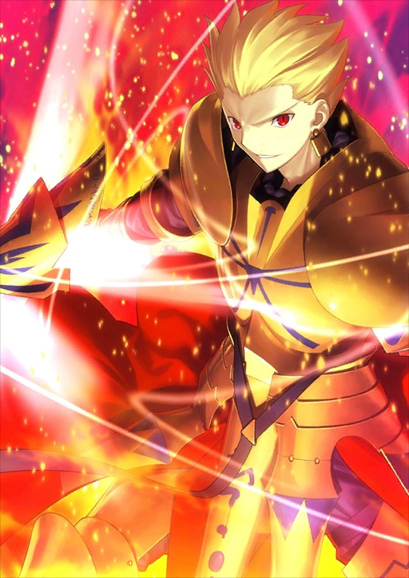

动画/漫画/游戏/总之是无可救药的死宅
是个宅，是个死宅，不过不是肥宅。
说到动画的话，最近在看《鬼灭之刃》、《石纪元》、《CAROLE & TUESDAY》之类的，我选的配图也暴露了，我是个月球人，系列动画什么的当然在看啦（埃尔梅罗二世事件簿完结撒花~），十月份魔兽战线的动画也要上啦，HF的剧场版第三章明年大概就能看到啦~(*^▽^*)
总的来说，看的类型挺杂的，上至萌豚，下至JOJO，没有忌口。
漫画当然也看得很杂啦，没有忌口×2。最近在补JOJO的漫画，进度缓慢_(:з」∠)_。也是个和富坚老贼比命长的猎人粉（今天富坚更新了吗？没有？哦。），希望能活着看到黑暗大陆篇。不过上了大学后几乎没什么时间看漫画啊ちくしょう ！（看动画打游戏却有时间吗）
游戏当然也玩得很杂啦，没有忌口×3。←啊并不是这样的。我对于一切联机对战主pvp的游戏都完全不在行！无论是moba还是吃鸡还是cs类都非常苦手。所以还是比较喜欢玩单机啦，角色扮演类、动作类、解谜类都蛮喜欢的。PC端、switch都在玩，可惜没有PS4……希望大学里能晚上PS4蜘蛛侠……
手游当然在玩啦，目前主要在玩FGO、明日方舟和闪耀暖暖（对，闪耀暖暖），如果有在玩这几个的来加好友啊~